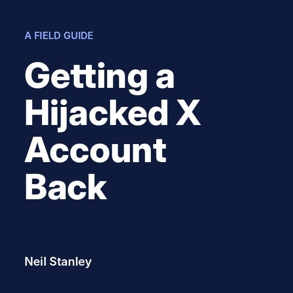

The first hour, in order
- Open your profile logged out. Screenshot it and several scam posts, with dates.
- Keep X's "email changed" notice. Start a log, with times in UTC.
- Tap "Secure your account" in that notice and file the compromised-account form. Once.
- Try the password reset once and screenshot what it offers. If the reset goes to the attacker's address, stop.
- Reply to X's automatic questions within minutes: username, every email, last access date, phone.
- Search every mailbox for x.com and twitter.com. Save it all. Old receipts and notices are your proof.
- Change your email password and switch on two-step verification there.
- Warn people where the attacker can't reach: LinkedIn, groups, email.
- Ignore anyone who offers to help in DMs or replies. They are scammers too.
- Do not create a new account. Do not delete anything yet.
Then expect a no. X's access team rejected my proof twice, with the same email word for word. Closed did not mean closed. What I did next was send five things on the same morning, each citing the others. Two days later, X moved.
Download the checklist (PDF)
Save it to your phone. You'll want it again tomorrow.

If X says no: the full guide
$19.95 · 57-page PDF
Everything I did over ten days, in order, from X's own emails as they arrived.
- Which X teams act, and which only send canned replies
- 12 copy-and-paste templates, including the GDPR and copyright letters
- The Persona ID check, and the four statements X asks you to make
- Clearing thousands of scam posts once you're back in